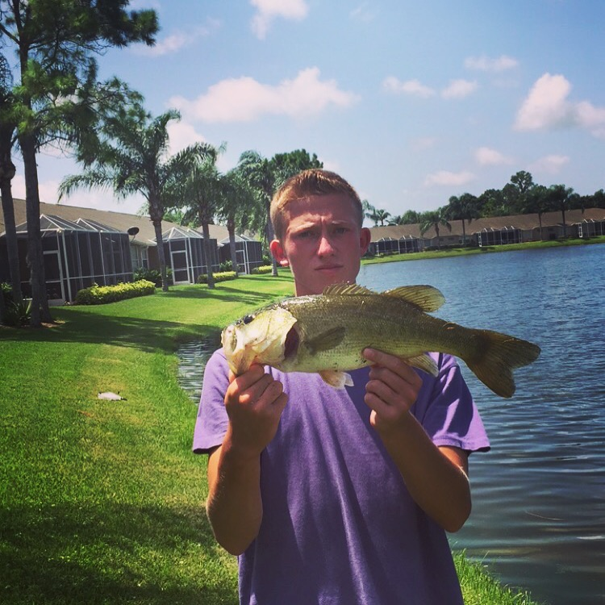
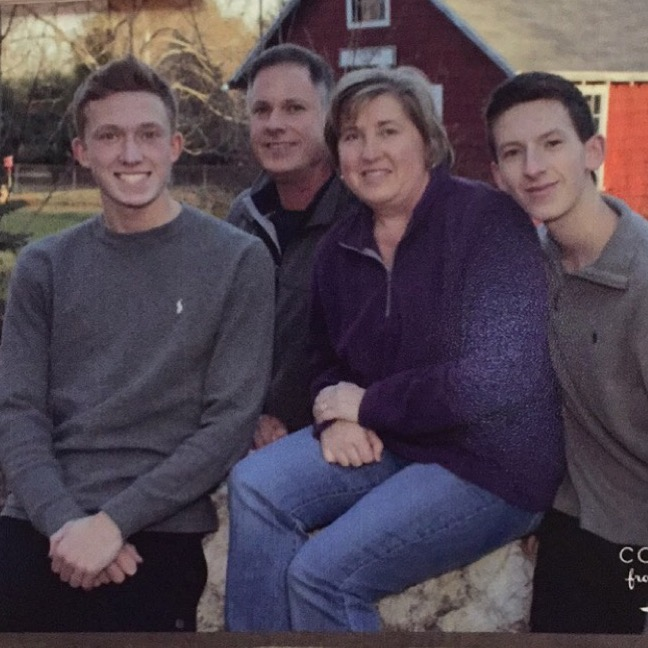

Alex Jacobs
Alex Jacobs
Alex C. Jacobs
Westbrook, ME 04092
Instagram: Alex___Jacobs7
email: alex.jacobs@maine.edu
Hello! Welcome to my webpage, I'm Alex, a second year Marketing Major with a Minor in Economics. I'm chasing the dream of becoming a Pharmaceutics Sales Rep. I was born and raised in Westbrook, Maine. For those who do not know where that is, Westbrook is about two hours south of Orono. My webpage is designed to give you a little overview of my life and who I am, enjoy!
Job History
Job History
My first job I had was in the fall going into Junior year of High School. I worked at a Country Club my High School Golf team played at. Portland Country Club is located in Falmouth Foreside on the Ocean. It is a very scenic and picturesque course. This job by far has been my favorite. I love working outside so, that's a plus. More importantly I love playing golf, my friends also work here with me so we get to golf at one of the nicest courses in Maine for free. Another job I currently have is working at Hannaford. I don't enjoy this job as much as working at the golf course. I work in the produce department which is cold because it's a cooler set at 25 degrees. The upside though is I like the group of guys that work with me in Falmouth so it makes work more enjoyable.
 Hobbies
Hobbies
Family
Education
Hobbies
My Hobbies
My favorite hobbies are going fishing at the lake with my friends, playing golf at the country club, and hanging with the boys especially on saturdays. In this Picture taken by one of my friends, I was on a golfing and fishing trip at Heritage Oaks Country Club. This Country Club is located in Sarastoa, Florida.

Family
My Family
This is my family, my father is an Structural Engineer, my mother is A Pre-School teacher, and my brothers a Sophomore at Cheverus High School.

Education
Education Background
I grew up in the Westbrook public school system attending classes from kindergarden to half way through 10th grade. My sophomore year of high school, I decided to make a change to help broaden my future. That change involved a switch in schools. I decided to go to a college preparatory school in Portland, Cheverus High School. This was a big change for me because this school was much more rigorous than a public high school. Cheverus is a private Catholic school, this was new because I had added on a new field of study theology, the study of God. Something new was I had to wear a suit and tie to school everyday which was different at first, but you get used to it. All and all Cheverus was one of the better experiences of my life.
 Hobbies
Hobbies
Family